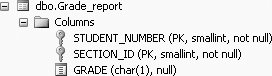

5.1. Aggregate FunctionsAn aggregate function (or group function) is a function that returns a result (one number) after calculations based on multiple rows. We use the term "aggregate" (instead of "group"), because it avoids confusion later in the book (we discuss other GROUP functions in Chapter 9). An aggregate function basically combines multiple rows into a single number. Aggregate functions can be used to count the number of rows, find the sum or average of all the values in a given numeric column, and find the largest or smallest of the entries in a given column. In SQL, these aggregate functions are: COUNT, SUM, AVG, MAX, and MIN, respectively. In this section, we examine several of these aggregate functions. 5.1.1. The COUNT FunctionThe COUNT function is used to count how many (rows) of something there are, or the number of rows in a result set. Following is the general syntax for the COUNT function.
SELECT COUNT(*)
FROM Table-name(s)
COUNT(*) returns a count of the number of rows in the table(s). The following query counts the number of rows in the table, Grade_report:
SELECT COUNT(*) AS [Count]
FROM Grade_report
The following is its output:
Count
-----------
209
(1 row(s) affected)
COUNT(*) counts all rows, including rows that have some (or even all) null values in some columns. In Figure 5-1, we present the table definition of the Grade_report table to remind you of the columns available in the Grade_report table. Figure 5-1. Table definition of the Grade_report tableSometimes we want to count how many items we have in a specific column. The general syntax for counting the number of items in a specific column is:
SELECT COUNT(attribute_name)
FROM Table-name(s)
For example, to count the number of grades in the grade column of the Grade_report table, we could type the following:
SELECT COUNT(grade) AS [Count of Grade]
FROM Grade_report
This produces the following output:
Count of Grade
--------------
114
(1 row(s) affected)
COUNT(column) counts only non null columns. Although the Grade_report table has 209 rows, you get a count of 114 grades rather than 209 grades, because there are some null grades in the grade column. The COUNT feature can be quite useful because it can save you from unexpectedly long results. Also, you can use it to answer "how many" queries without looking at the row-values themselves. In Chapter 4, which showed how Cartesian products are generated, you learned that SQL does not prevent programmers from asking questions that have very long or even meaningless answers. Thus, when dealing with larger tables, it is good to first ask the question, "How many rows can I expect in my answer?" This question may be vital if a printout is involved. For example, consider the question, "How many rows are there in the Cartesian product of the Student, Section, and Grade_report tables in our database?" This is answered by the query:
SELECT COUNT(*) AS Count
FROM Student, Section, Grade_report
The following output shows the count from this query, which will be equal to the product of the table sizes of the three tables (the Cartesian product of the three tables). Obviously, in this example, it would be a good idea to first find out the number of rows in this result set before printing it.
Count
-----------
321024
(1 row(s) affected)
Contrast the previous COUNTing-query and its Cartesian product result to this query:
SELECT COUNT(*) AS [Count]
FROM Student, Grade_report, Section
WHERE Student.stno = Grade_report.student_number
AND Grade_report.section_id = Section.section_id
The following is the result of this query:
Count
-----------
209
(1 row(s) affected)
What is requested here is a count of a three-way equi-join rather than a three-way Cartesian product, the result of which is something you probably would be much more willing to work with. Note also that you expect a count of about 209 from the sizes of the tables involved: Student (48 rows), Grade_report (209 rows), and Section (32 rows). The expected count of a join operation is of the order of magnitude of the larger number of rows in the tables. SQL syntax will not allow you to count two or more columns at the same time. The following query will not work:
SELECT COUNT (grade, section_id)
FROM Grade_report
You will get the following error message:
Msg 174, Level 15, State 1, Line 2
The COUNT function requires 1 argument(s).
5.1.2. The SUM FunctionThe SUM function totals the values in a numeric column. For example, suppose you have another table called Employee that looks like this:
names wage hours
--------------- ------------ -----------
Sumon Bagui 10.0000 40
Sudip Bagui 15.0000 30
Priyashi Saha 18.0000 NULL
Ed Evans NULL 10
Genny George 20.0000 40
(5 row(s) affected)
In this Employee table, names is defined as a NVARCHAR column, wage is defined as a SMALLMONEY column, and hours is defined as SMALLINT.
To find the sum of hours worked, use the SUM function like this:
SELECT SUM(Hours) AS [Total hours]
FROM Employee
This query produces the following output:
Total hours
---------------------
120
Warning: Null value is eliminated by an aggregate or other SET operation.
(1 row(s) affected)
Columns that contain null values are not included in the SUM function (and not in any aggregate numeric functions except COUNT(*)).
5.1.3. The AVG FunctionThe AVG function calculates the arithmetic mean (the sum of non null values divided by the number of non null values) of a set of values contained in a numeric column (or attribute) in the result set of a query. For example, if you want to find the average hours worked from the Employee table, type:
SELECT AVG(hours) AS [Average hours]
FROM Employee
This produces the following output:
Average hours
---------------------
30
Warning: Null value is eliminated by an aggregate or other SET operation.
(1 row(s) affected)
Again, note that the null value is ignored (not used) in the calculation of the average, so the total hours (120) is divided by 4 rather than 5. 5.1.4. The MIN and MAX FunctionsThe MIN function finds the minimum value from a column, and the MAX function finds the maximum value (once again, nulls are ignored). For example, to find the minimum and maximum wage from the Employee table, you could type the following:
SELECT MIN(wage) AS [Minimum Wage], MAX(wage) AS [Maximum Wage]
FROM Employee
This query produces the following output:
Minimum Wage Maximum Wage
------------ ------------
20.0000
Warning: Null value is eliminated by an aggregate or other SET operation.
(1 row(s) affected)
The MIN and MAX functions also work with character and datetime columns. For example, if we type:
SELECT "First name in alphabetical order" = MIN(names)
FROM Employee
We will get:
First name in alphabetical order
--------------------------------
Ed Evans
(1 row(s) affected)
And, if we type:
SELECT "Last name in alphabetical order" = MAX(names)
FROM Employee
We will get:
Last name in alphabetical order
-------------------------------
Sumon Bagui
(1 row(s) affected)
In the case of strings, the MIN and MAX are related to the collating sequence of the letters in the string. Internally, the column that we are trying to determine the MIN or MAX of is sorted alphabetically. Then, MIN returns the first (top) of the alphabetical list, and MAX returns the last (bottom) of the alphabetical list. |